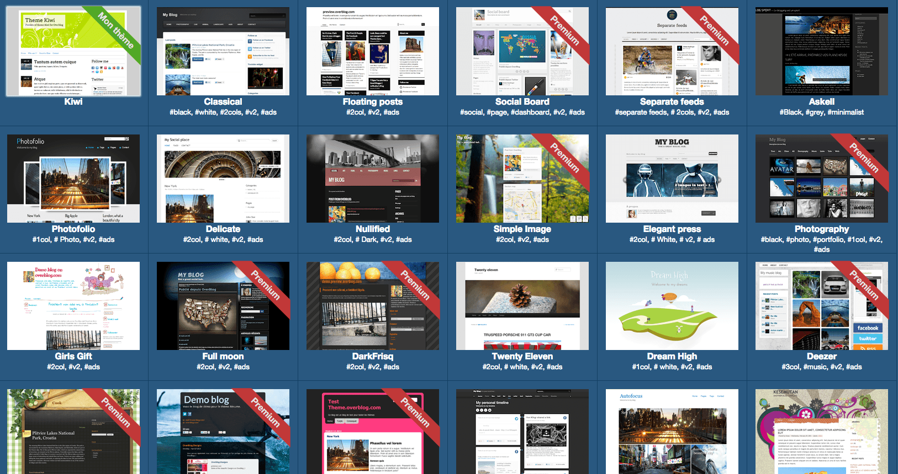

Compétences
- Développement web : HTML5, CSS3, Less, Responsive design, Twig, Twitter Bootstrap, Javascript, jQuery, YUI3, PHP5, MySQL, Photoshop.
- Méthodes agiles : Scrum, Kanban.
- Gestionnaire de version : Git.
- Autoformation : Grunt, Sass, Knacss.
- Certifié ingénieur Zend PHP5 en 2009
Expériences
Responsable Thèmes chez Overblog - Toulouse
Septembre 2012 à Janvier 2014
Au sein d'Overblog j'avais en charge la gestion de l'ensemble des thèmes des blogs, depuis le développement de nouveaux thèmes jusqu'à la maintenance et les mises à jour à chaque nouvelle fonctionnalité développée par l'équipe. De plus j'avais aussi la charge de proposer et de tester les évolutions de la surcouche maison du moteur de template Twig.
- Intégration HTML5/CSS3 avec le système de templating Twig.
- Responsive design, compatibilité des navigateurs, développement Javascript et jQuery.
- Travail en équipe avec les méthodes agiles Scrum, puis Kanban.
- Gestion de l'équipe thème et formation d'un intégrateur junior.
Références
- Thème Kiwi
- Thème Classical
- Thème Floating Posts
- Thème Social Board
- Thème Separate Feeds
- Thème Photofolio
- Thème Photography
Développeur web chez Overblog - Toulouse
Avril 2011 à Septembre 2012
Parmi l'équipe front d'Overblog, j'ai participé à la création de la nouvelle version Overblog Kiwi de la plateforme.
- Développement Javascript avec les frameworks YUI3 et Yoshioka.js. Tests unitaires. Intégration HTML5/CSS3.
- Travail en équipe avec la méthode agile Scrum.
Développeur web chez WS-Interactive - Toulouse
Février 2007 à Décembre 2010
Au sein de l'agence web WS-Interactive, j'ai développé de nombreux sites avec le CMS open source Automne. A partir des maquettes graphiques et des spécifications techniques j'avais la charge de l'intégration, des développements de modules spécifiques, du déploiement du site en ligne ainsi que du support client.
- Intégration XHTML/CSS, compatibilité des navigateurs, respect des normes W3C, gestion de comportement non intrusive, sensibilité à l'accessibilité.
- Développement de modules PHP spécifiques aux besoins client.
- Maintenance web, support clientèle et évolutions personnalisées.
Formations
2005 - 2006 : Licence Professionnelle Activités et Techniques de Communication mention Multimédia – Internet – Webmaster. Université de Méditerranée - Gap (05)
2003 - 2005 : DUT Informatique option Génie Informatique. IUT de Bayonne (64)
Loisirs
Jeux de société, animateur bénévole au Festival du Jeu de Toulouse, jeux vidéo, lecture.
Contact
- Email : thierry.bernier.pro@gmail.com
- Téléphone : 06 73 75 60 31